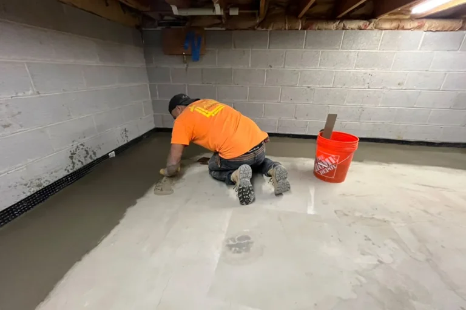

Written by the ARD Waterproofing Installation Team | Serving West Essex, Passaic & Morris Counties, NJ
If your basement has been losing the battle against water, you’ve probably already Googled every option. You know a drainage system is the answer. But here’s what’s actually keeping you up at night: What are they going to do to my house?
That’s the right question. And it deserves a straight answer, not a brochure.
This is a ground-level walkthrough of exactly how an interior perimeter drainage system gets installed. The physics behind it, the prep work, the jackhammering (yes, we’re going to talk about it), and what your basement looks like when the crew packs up and leaves. No vague promises. Just the real process.
Why Your Basement Leaks in the First Place (It’s Not What You Think)
Most homeowners assume water is forcing its way through the foundation wall. Sometimes that’s true. But in New Jersey, especially in West Essex, Passaic, and Morris County, the more common culprit is hydrostatic pressure.
Here’s a simple way to picture it. Imagine your foundation sitting inside a clay bowl. After a heavy rain or a spring thaw, that bowl fills up with saturated soil. NJ’s notorious red clay is particularly good at holding water instead of letting it drain away. The water has nowhere to go, so it builds pressure, lateral pressure against your walls, and upward pressure against your floor slab.
Water finds the path of least resistance. Nine times out of ten, that path is the cold joint, the seam where your foundation wall meets the floor. It’s not a flaw in the construction; it’s just physics. Every poured concrete basement has one.
Sealing that joint with hydraulic cement or waterproofing paint is a temporary fix at best. You’re not eliminating the pressure, you’re just putting a finger in the dam. An interior drainage system doesn’t try to stop the water. It intercepts it at the source and redirects it before it can damage your space. That’s a fundamentally different approach, and it’s why it works long-term.
For a full comparison of interior versus exterior approaches, check out our breakdown of exterior drainage solutions, but for most finished or semi-finished NJ basements, interior is the practical choice.
Before the Crew Arrives: The Assessment That Matters
A proper installation starts before a single tool comes out of the truck.
When we assess your basement, we’re mapping the perimeter, identifying which walls are actively leaking, where the cold joint is most compromised, and where the sump basin will be positioned for optimal gravity flow. The pipe needs to run downhill toward that basin, so the layout isn’t arbitrary.
We’re also looking at your slab thickness. Most NJ homes built before 1980 have a 3- to 4-inch slab. That determines how deep we trench and how much concrete gets removed. You’ll know all of this before we start, no surprises on installation day.
Installation Day: What Actually Happens, Hour by Hour
Step 1: The Clean Installation Protocol (Before Anything Breaks Ground)
This is the part most contractors skip over. We don’t.
Before the jackhammers come out, the crew sets up full containment. That means:
- Floor-to-ceiling plastic sheeting sealing off the work zone from the rest of your basement
- Negative air pressure fans with HEPA filtration running continuously, these pull dust away from your living space instead of letting it drift through the house
- Ram Board or heavy-duty floor protection covering any finished flooring, stairs, and doorways that the crew will use
Concrete dust is fine and pervasive. Without containment, it coats everything: HVAC intakes, stored belongings, finished walls. With it, the mess stays exactly where the work is happening. This is non-negotiable for us, especially in finished or semi-finished spaces.
Step 2: Breaking the Perimeter (Yes, There’s Jackhammering)
We won’t sugarcoat it, this is the loudest part of the day.
We use electric demolition hammers to break a channel along the interior perimeter of your foundation walls. The channel is typically 8 to 12 inches wide and runs along the sections of the perimeter identified in the assessment. We’re not jackhammering your entire floor, just the strip where the drainage pipe will sit.
The broken concrete and soil are removed and hauled out. In NJ’s red clay conditions, this excavation can be dense work. Our crews are used to it.
One detail that matters: as we expose the base of the foundation wall, we drill weep holes through the lower courses of the block or along the footer. These small holes allow water that’s trapped inside hollow block walls to drain into the system instead of continuing to build pressure. It’s a critical step that separates a properly engineered system from a basic drain-and-pump setup.
Step 3: The System Goes In
With the trench open, here’s what gets installed, from bottom to top:
The Gravel Bed
A layer of clean, washed stone goes in first. This isn’t decorative, the void space in the aggregate is what gives water somewhere to move quickly. It also prevents fine soil particles from migrating into and clogging the pipe over time.
The Perforated Drain Pipe (Weeping Tile)
This is the workhorse of the system. A perforated PVC pipe, typically wrapped in a filter fabric sock, sits in the gravel bed and runs the length of the trench. The sock keeps fine sediment out while letting water flow freely through the pipe’s perforations.
Pitch matters here. The pipe needs a consistent downward slope, typically ⅛ inch per foot, toward the sump basin. We check this with a level throughout the install. A flat pipe is a clogged pipe waiting to happen.
The Sump Basin
At the lowest point of the system, we core through the slab and set the sump pit, a perforated liner that collects everything the drain pipe delivers. The lid is sealed, which matters for two reasons: it controls odors and, critically, it helps manage radon gas. An open sump pit is a direct pathway for soil gases into your living space.
The sump pump itself handles the mechanical discharge and basin integration, moving collected water up and out through a discharge line that exits the foundation. In NJ, that discharge line needs to be buried at a minimum depth to prevent freezing during January and February nor’easters. We spec and install IceGuard discharge fittings as a standard practice, if the line ever does freeze, the guard allows water to exit at grade instead of backing up into the pit.
For more on pump selection, backup systems, and GPH requirements, see our full guide on [sump pump installation].
Step 4: Concrete Restoration
Once the system is in place, we fill the trench back in with concrete and finish it flush with your existing floor.
We use a hydraulic cement mix for the initial pack, followed by a top coat that’s hand-troweled smooth. The finished surface won’t be invisible, there will be a visible seam along the perimeter, but it will be clean, flat, and structurally solid. In most cases, homeowners lay flooring or carpet back over it within a few days.
The weep holes at the base of the wall remain open and functional. The concrete restoration covers the trench, not the drainage pathway.
Step 5: Cleanup and Walkthrough
Before we leave, the containment comes down, the site gets thoroughly cleaned, and we walk you through the completed system. We show you where the discharge line exits, how to test the pump manually, and what the annual maintenance looks like (it’s minimal, a flush and a float test once a year).
You’ll also get documentation of the installation for your records, useful for home resale and for any future service visits.
A Quick Look at the System Cross-Section
Here’s how the layers relate to each other, from the soil up:
Foundation Wall
|
[Weep Holes ← water draining from hollow block wall
|
[Footer / Base of Wall
|
Gravel Bed ← aggregate creates flow space
|
Perforated Pipe w/ Filter Sock ← collects and channels water
|
Gravel Bed (below pipe)
|
Native Soil / Subgrade
Water follows gravity through every layer of that stack, arrives at the pipe, travels downslope to the basin, and gets pumped out. Hydrostatic pressure is relieved continuously, not after it’s already entered your space.
Can This Be Done in a Finished Basement?
Yes, and we do it regularly. The key is the containment protocol described above.
We’ll work around framing, utilities, and stored belongings. In some cases, a section of drywall at the base of a finished wall may need to come down to access the cold joint and footer properly. We’ll tell you exactly what’s needed during the assessment, no day-of surprises.
The work that gets disturbed gets restored. That’s part of the job, not an add-on.
What Happens If the Power Goes Out During a Storm?
This is the question that matters most, because the worst storms are exactly when your sump pump is working hardest.
A battery backup system is the answer. A properly sized AGM (absorbed glass mat) battery backup can run your pump for 6 to 12 hours without grid power, depending on the inflow rate. We recommend battery backup as a standard component of any new installation, not an upsell, just the honest answer to “what if.”
WiFi-enabled pump monitors can also send an alert to your phone if the water level rises unexpectedly or the primary pump fails. For a home in a low-lying area near a Morris County tributary or a high-water-table zone in Passaic County, that kind of real-time awareness is worth having.
For a full breakdown of comprehensive interior moisture management options, including redundancy systems, our waterproofing services page covers the complete picture.
You Don’t Have to Visualize It Alone
The reason most homeowners feel anxious about this project isn’t the cost, it’s the unknown. What are they going to do to my house? How bad will the mess be? Will it actually work?
Now you know what the day looks like. The containment goes up first. The trench gets cut, the system goes in, the concrete gets restored, and the site gets cleaned. Done in a day in most cases.
If your basement is showing water at the cold joint, seeping through block walls, or flooding during heavy NJ rain events, the system described here is the long-term fix. Not a coating. Not a sealant. A properly engineered drainage pathway that relieves pressure and keeps your space dry, storm after storm.
We’re a local, employee-owned company based in West Caldwell, NJ. We serve West Essex, Passaic, and Morris Counties, and we’re available 24 hours a day. Call or text us to schedule a no-pressure assessment. We’ll walk your basement, map the problem, and give you a straight answer, and a fair number.
Frequently Asked Questions
Why is an interior French drain better than an exterior one for most NJ homes?
Exterior excavation is the more invasive option, it requires digging down to the full depth of your foundation from the outside, which means removing landscaping, hardscaping, and significant amounts of soil. In densely built NJ neighborhoods or on properties with mature landscaping, that’s often impractical or cost-prohibitive. Interior installation achieves the same pressure-relief result by working from inside the basement, with far less disruption to the exterior of your property. For new construction or homes with severe exterior wall deterioration, exterior work may be the right call, but for the majority of retrofit situations, interior is the practical, proven approach.
Does an interior French drain require a sump pump to work?
Yes. The drain pipe collects and channels water, but gravity can only take it so far, to the lowest point in your basement. Without a sump pump to discharge the collected water up and out of the foundation, the basin would simply fill up and overflow. The drain and the pump are two halves of the same system. One moves water horizontally; the other moves it vertically and out of the building.
How do you prevent the sump pump discharge line from freezing in winter?
This is a real concern in NJ, where January and February temperatures can stay below freezing for extended stretches. The discharge line needs to be buried below the frost line where it runs through the exterior, typically 36 inches in our service area per NJ frost depth norms. At the point where it exits the foundation, we install an IceGuard fitting: a device that allows water to escape at grade level even if the buried line freezes solid. This prevents water from backing up into the pit and flooding the basement during the exact conditions when you need the system most.